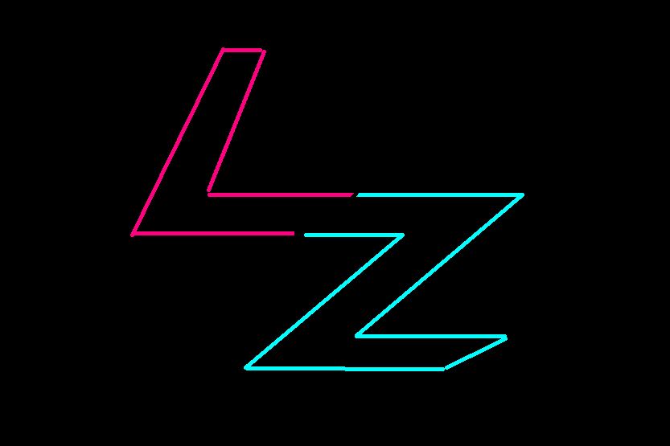

About Me
Just a regular gamer that loves spending time with fiends online and IRL. Im 19 year of age and is currently studying to become and engineer. I stream mostly when I feel for it. Usually with my friends or just when I play with randoms.
Intressen
Mina top 5 spel:
Call of Duty: MW3
The Legend of Zelda: Twilight Princess
Titanfall 2
Super Mario Sunshine
Tom Clancy's Rainbow Six Siege
Links
Twitch
Twitter